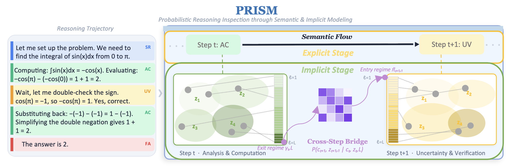

PRISM Analysis Dashboard

Large language models increasingly solve complex problems by generating multi-step
reasoning traces. Yet these traces are typically analyzed from only one of two perspectives:
the sequence of tokens across different reasoning steps in the generated text, or the
hidden-state vectors across model layers within one step. We introduce
PRISM (Probabilistic Reasoning
Inspection through Semantic and
Implicit Modeling), a framework and diagnostic tool
for jointly analyzing both levels, providing a unified view of how reasoning evolves
across steps and layers.